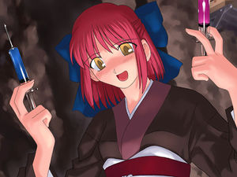
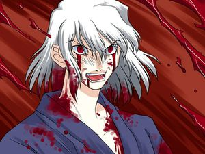

Tsukihime
 De: La Frikipedia, la enciclopedia extremadamente seria.
De: La Frikipedia, la enciclopedia extremadamente seria.
| De la serie anime para todos:
|
| Tsukihime
|
|
|
| La princesa de la luna en cuestion
|
|
| Género:
|
Hentai, Vampiros, Droga, Gore, Fantasía
|
| Episodios:
|
13
|
| Autor del manga:
|
Tipo Luna
|
| Publicación:
|
Diciembre del 2000
|
| Publicado en:
|
No se
|
| Director del anime:
|
Alguien que no le gustó el hentai y arruinó la serie, pues solo dejó las escenas aburridas y a todos con caras largas a lo CLAMP.
|
| Transmitido en:
|
Youtube y TuTv
|
| Ovas:
|
|
| Películas:
|
Nones
|
| Notas
|
Jueguen los juegos, Melty Blood, Kagetsu Tohya o lo que sea, pero no miren el anime. Jamas!
|
«CORTAR! MATAR! CORTAAR!»
~ Shiki Tohno cuando no esta cogiendo con alguna hembra
«Por que no me sacan mi ruta?!»
~ Satsuki Yumizuka sobre porque borraron su ruta en la novela visual
«A la mierda, que no me llamo Capslock-kun!»
~ SHIKI Tohno sobre el fan-name que le pusieron para no confundirlo con su ex-aminovio el prota
«......»
~ Len hablando sobre filosofía
«Nii-san!»
~ Akiha Tohno sobre lo mucho que quiere follarse a su hermano falso
«Es la hora de la falopa las agujas!»
~ Kohaku a punto de drogar a cualquiera de los dos Shikis
Tsukihime o Princesa de la Luna en español (suficiente para decir que es hentai) es una novela gráfica hentai creado por Tipo Luna (Type Moon), una empresa que se daba muchas jaladas y decidieron compartir su alegria en 2004. Originalmente el jueguito ese tenia imagenes pintadas en Paint, pero dicen que van a sacarle un remake que hasta ahora los otakus pajeros siguen esperando.
Tsukihime fue el primer hentai sacado por la empresa trabajo comercial de Type Moon y se hizo popular de inmediato por llamar la atención de pederastas y fanáticos del hentai.
Historia
Trata de la historia de un tio llamado Shiki Nanaya Tohno, que viene de nuevo a vivir a la lujosa mansion donde vive su hermana tsundere plana junto a sus dos maids calientes, ya que por alguna razon no lo dejaron vivir ahi por ocho años. Tambien conoce a su compañera de clase metiche y a Arcueid, una vampiro tetona que pasaba por la calle, que nomas verla la rebanó en pedazos, ya que tiene los Ojos del Shinigami. Resulta que en verdad Shiki viene de una familia de sicarios y que, cual Skinner, reemplaza legalmente al verdadero Shiki Tohno que es un loco canibal genocida incestuoso ya que un vampiro llamado Roa que es un yandere obsesionado con Arcueid esta metido en su cuerpo. Aqui, dependiendo de a quien se quiera follar, Shiki debe escoger a cual ruta se va.
Si opta por irse con la vampiro Arcueid, debera matar a un loco llamado Nero Chaos, que le salian 666 animales por el orto. Como Arc es vampiro y esta debilitada por la rebanacion que padeció al inicio de la serie (cabe decir que es casi tan fuerte como Gokú), a cada rato trata de mamarsela chuparle la sangre a Shiki, hasta que por fin tienen su escena hentai. Sin embargo llega Roa y deja a Arc media muerta, de modo que Shiki lo rebana como pan. Al final Arcueid se despide de Shiki y no se ven nunca mas, o al menos hasta que llegan las secuelas.
Si opta por meterse con Ciel Phantomhive, la compañera de clase, ocurre todo el mismo rollo que en el anterior, pero esta vez Shiki no quiere meterse con la vampiro pechugas. Al final matan a Roa, pero este se mete dentro de Shiki, de modo que hay que sacarselo por las buenas o por las malas. Por ultimo, al final Shiki decide si colocarsela a Ciel o hacer un trio con Arcueid.
Si opta por irse con Akiha, la hermana tsundere plana que en verdad no es su hermana, primero hay que deshacerse de una compañera de clase que ha sido vampirizada y quiere violarse a Shiki. Luego Akiha trata de abrirse de piernas para Shiki pero no lo hace por tsundere. Hasta que llega SHIKI, que es el verdadero hermano de Akiha y el loco de patio poseido que mencionamos antes. Este la convierte en una loca genocida como el, pero se le pasa la mano porque ella lo mata descuartizandolo. Dependiendo si Shiki decide matar a la tsundere o no, al final el se muere y Akiha sobrevive solo para que al final digan que el gilipollas sigue vivo o sino deja a Akiha encerrada en el sótano, loca genocida por siempre.
Si se enreda con Hisui, la maid frigida, no hace casi nada porque Hisui es mas aburrida que el Rellenuto, ademas que su hermana Kohaku le roba el show. Solo se sabe que Kohaku causó que la vida en casa de los Tohno sea una mierda y es quien volvió a SHIKI en un loco genocida, porque es una emo vengadora. Al final muere la plana de Akiha por hacer de escudo de carne y dependiendo de que tan lesbiana sea Kohaku por ella, al final se suicida o queda con amnesia. Y Hisui? Nada, solo que en todas se queda con Shiki y se le quita la frigidez.
Si se mete con la maid falopera de Kohaku, ocurre lo mismo que la anterior, excepto de que Akiha absorbe a SHIKI y le pega la locura y el genocidio. La Akiha yandere quiere matar a Kohaku, pero al final ya que friendship is magic, se calma y Kohaku puede follar en paz con Shiki.
Al final despues que Shiki se garchó a todas, se sabe que por usar tanto sus Ojos del Shinigami, le quedan pocos años de vida, pero eso es historia.
Los protas
- El protagonista de la serie, gilipollas supremo, pero no se dejen engañar, que es tan gilipollas como poderoso. En primer lugar, tiene los Ojos de la Percepción, que le permiten ver los puntos débiles de las personas, a lo que el aprovecha para rebanarlos como pescados. En verdad se llama Shiki Nanaya y pertenece a un clan de sicarios, solo que reemplaza legalmente al verdadero Shiki Tohno, que es un monstruo que vive en el sótano más loco que Flandre Scarlet. Como es el prota, padece el Síndrome de Keitaro Urashima, que hace que todas quieran ser desvirgadas por él, aunque se ve que es tan arrecho, que se las tira a todas, pues aunque esta con la mejor hembra del show (véase Arcueid) tuvo sus encuentros con Ciel, la plana de Akiha, con la friendzoneada de Satsuki, con las dos maids y cuando era chamaco en el manga hasta tuvo sus momentos con el otro Shiki.
- En el juego, solo se dedica a hablar de sangre y muertos, decir en voz baja que quiere rebanar a medio mundo, estar arrecho muy arrecho y a follarse a medio casting y ver como su harem crece con saca secuela (a las que se agregan una catgirl loli y una lesbiana sabelotodo). Sin embargo, de alguna manera inexplicable y muy pendeja, Shiki siempre gana sus peleas o por lo menos no muere (cosa que le hace falta).
Arcueid incitándote a la paja
- Arcueid Brunestud: La tia mas buena de toda la serie y una ninfómana total, ademas siempre se le insinua a Shiki (veridico), aunque normalmente son interrumpidos por la culona de Ciel, la cual le da de hostias a Arcueid. Es un vampiro que es usada de arma para acabar con los Dead Apostles hasta que un cura con complejo de Orochimaru llamado Roa se enamora de ella y le hace beber su sangre. Su misión era matar a Roa por millonésima vez, ya que este se metia en los cuerpos de adolescentes hormonales con superpoderes pero Shiki decidió rebanarla en plena calle porque si, de modo que esta queda prendada de el. Lógico, no?
- Se sabe que es casi tan fuerte como Gokú, pero después de que Shiki la cortara en pedacitos esta débil y con abstinencia de sangre. Siempre se agarra de hostias con Ciel porque seodian y porque pelean por
la polla el amor de Shiki, pero secretamente tienen sus momentos lesbicos. Cuando no esta matando Dead Apostles o follando con Shiki, trabaja de cosplayera de Sailor Moon llamada Phantasmoon.
Ciel-sensei cada vez que pierdes el juego
- Que no, no es ese otro Ciel. Es una compañera de clase de Shiki que le gusta comer curry a reventar y quejarse cada ve de que este va tras la vampiresa tetona. En verdad es una exterminadora de vampiros de la iglesia de Ratzinger Z y es más vieja que Tsunade y fue una víctima de los experimentos de Porrochimaru, digo Roa. Ya que en verdad es francesa y su verdadero nombre es Elesia, pero un dia Roa se metió en su cuerpo y la hizo provocar un apocalipsis vampiro hasta que vino Arcueid a cargársela, pero por razones desconocidas Ciel se volvió inmortal. Según fuentes verídicas (véase Arcueid y Shiki), tiene un gran culo el cual aprovechan la vampiresa y el calenturiento para manosear.
- En el juego, cada vez que pierdes, aparece Ciel en un cosplay sensual de profesora en un segmento llamado “Enseñame Ciel-sensei” en el que te dice los trucos para ganar y se da de hostias con Arcueid.
Akiha cabreada porque la llamaron plana
«Como que te atreviste a llamarme plana, Nii-san?»
~ Akiha sobre su Síndrome de Sakura Haruno
- (Alias “la incestuosa barata” o “Planilandia 2”). Es la hermana de Shiki y es inútil, chillona, mandona, pija, idiota como ella sola y no está buena, es más, plana como una tabla de planchar. Esta coladita por Shiki, pero este no porque son hermanos, es más ni siquiera son hermanos, ya que su verdadero hermano es el otro SHIKI, aunque en su ruta en la novela visual se la follan. Como es mitad demonio, cuando esta de malas se transforma en Vermillion Akiha, que la vuelve saiyayin y se le pone el pelo
de la concha rojo. La muy puta odia a Arcueid y Ciel porque le quitan a Shiki (aunque deja que este se tire a las sirvientas), pero todos sabemos que en verdad es porque tienen más atributos que ella.
- Segun ella es tsundere y en sus escenas hentai le pide a Kohaku que le haga petes al gilipollas mientras ella se complace, pero al final resulta ser la mas puta.
- (Alias “la maid frigida”) Es una de las
putillas sirvientas de Akiha, es la hermana menor de Kohaku, carece de personalidad al más puro estilo de Rei Ayanami y lo unico que hace o quiere hacer es ir detrás del calenturiento de Shiki. Cocina puras mierdas, como el Arroz Tres Delicias o sandwiches de ciruelas. Se revela que antes era más alegre y traviesa, tanto como si estuviera empastillada de LSD, pero después de que se enteró de que Kohaku era la cubeta de semen de la familia Tohno, cambió de personalidad con ella por mas estúpido que suene. Al igual que Kohaku, tiene el poder de curar a quien tenga sexo con ella. No le gusta que los hombres o Shiki la toquen porque quiere mantenerse virgen ya que Kohaku se sacrifico por ella.
- La pendeja es tan, pero tan aburrida (hasta en su ruta Kohaku le roba camara) que tiene varias parodias, como la
megazord mecha Hisui o la detective lava-cerebros Hisui, que te dice que eres el culpable.
 Kohaku pensando en drogarte
- (Alias “la maid vengadora y drogadicta”) Es la putilla de Akiha y la hermana mayor de la otra sirvienta mencionada. Se la pasa jugando GTA o experimentando con hierbas de dudosa procedencia. Tuvo una infancia muy infortunada, ya que era la putilla del padre de Akiha y SHIKI porque su poder era regenerar a quienes se la follen, muy a lo Type-Moon. Cuando SHIKI se volvió loco, pasó a ser la puta de este de modo que anda planeando venganza contra la familia Tohno.
- Su plan consistía en este: drogar a SHIKI y hacerle creer que nadie lo queria y bla, bla, bla hasta que termine convertido en un monstruo de destruccion masiva y que mate al patriarca Tohno, despues hacer que Planilandia enloquezca, hacer que SHIKI la mate y luego hacer que Shiki lo mate a este para luego que Kohaku se suicide. En las rutas del juego su plan funciona o ella misma malogra su plan (al darse cuenta de que Akiha es de su agrado). Cuando no esta planeando drogar locos parricidas o experimentar con falopa, se la pasa haciendo experimentos extraños en el sótano.
Otros amiguitos
Satsuki preguntándose cuando le sacaran su ruta
- Alias Sacchin. Era una chica normal que cometio la desgracia de fijar blanco en Shiki. Un dia mientras caminaban por la calle, ella le hizo prometer que si estaba en problemas, el vendría a salvarla y toda esa mierda de los animes. Sin embargo, ese dia SHIKI tenia hambre y la volvió vampiro. Tras esto la pendeja se vuelve yandere y al ver la competencia y que habia hembras mejores y/o mas locas que ella, trata de vampirizar a Shiki para que estén juntos por siempre, pero este la rebana, la manda al friendzone y muere. Por alguna razón, en Melty Blood revive y se hace lesbiana y hace trios con Sion y Riesbyfe.
- Tambien, todos se burlan de ella porque se supone que iba a tener su ruta en el juego y tener su deseada escena hentai con Shiki, pero nunca pasó.
- Vampiro homosexual y pedófilo (compadre de Carrie, se volvió vampiro. Experimenta meterse en el cuerpo de adolescentes hormonales de turno para ser inmortal (véase Ciel y el otro SHIKI), pero Arcueid siempre viene a fregarle el pastel. Tambien es un exhibicionista profesional, pues cada vez que se mete en el cuerpo del pobre adolescente de turno, lo hace andar por ahí en pelotas.
 SHIKI cuando se entero de que la puta de su hermana perdió la virginidad con su ex-aminovio
- Este es el verdadero Shiki Tohno, ya que el prota en verdad se llama Shiki Nanaya. De chamaco solia ser un rarito que era muy amigo de Shiki, con quien jugaba a los saludos penianos, hasta que un dia, como era mitad demonio y Roa se metió dentro de él, todo en el mismo dia, se puso berserk y casi mata a Shiki, casi. Por eso es que lo tienen encerrado en el sotano hasta que se le quite la locura, cual Flandre Scarlet.
- Su habilidad es regenerarse, hacer espadas de sangre como la pendeja de Kyoukai no Kanata y hacer sangrecontrol. Sufre continuos ataques de esquizofrenia y mata a todo lo que vea en su campo visual debido a la falopa constante que Kohaku le hace inhalar. Por mientras se dedica a hacer de cuerpo de turno para Roa, de modo de que al final lo matan. El tio este tiene un lio mental ya que un dia dice que odia a Shiki, luego que lo quiere, luego que quiere un trio salvaje con Akiha y vete a saber que más.
Sabias que?
- No entiendo por que carajos en cada trabajo de Type-Moon hay un Shiki?
- Ciel no es Ciel Phantomhive?
- Kohaku y Hisui no tienen apellidos, pero aparentemente son primas de la loca que queria volar de Kara no Kyoukai?
- Shiki es más fuerte que Naruto pero no tanto como Goku?
- Arcueid si?
- SHIKI conoció a su comadre de sotano y loca incestuosa en comun, Flandre Scarlet?
- Satsuki nunca tendra su ruta?
- Kohaku tiene enfermedades venereas, cortesía de los Tohno?
- El remake lo harán para el año 3000?
Frikipedia 2005-2016, Licencia
GFDL 1.2 - Extraído por FrikiLeaks